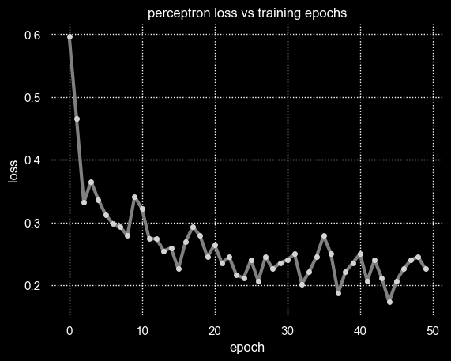

Table of Contents
1. implementation
1.1. setup
import numpy as np
import pickle as pkl
import matplotlib.pyplot as plt
import seaborn as sns
import pandas as pd
import random
def perceptron(z):
return -1 if z <= 0 else 1
def ploss(yhat, y):
return max(0, -yhat*y)
def ppredict(self, x):
return 'mine' if self(x) == 1 else 'rock'
def vis(losses):
data = {'epoch': np.arange(0, len(losses), 1), 'loss': losses}
df = pd.DataFrame.from_dict(data)
sns.set_theme()
sns.set_style("darkgrid", {"grid.color": ".5", "grid.linestyle": ":"})
plt.style.use("dark_background")
sns.lineplot(data=df, x="epoch", y="loss", color="gray", linewidth=3).set(title='perceptron loss vs training epochs')
sns.scatterplot(data=df, x="epoch", y="loss", markers=True, s=20, color="lightgray", zorder=2)
sns.despine(left=True, bottom=True)
print('done')
done
1.2. data
class SonarData:
def __init__(self, data_file_path='./data/', data_file_name='sonar_data.pkl'):
self.index = -1
with open('%s%s'%(data_file_path, data_file_name), mode='rb') as f:
sonar_data = pkl.load(f)
self.data = [(vector, 1) for vector in sonar_data['m']] + [(vector, -1) for vector in sonar_data['r']]
self.shuffle()
def __iter__(self):
return self
def __next__(self):
self.index += 1
if self.index == len(self.data):
self.index = -1
self.shuffle()
raise StopIteration
return self.data[self.index]
def shuffle(self):
random.shuffle(self.data)
def __len__(self):
return len(self.data)
data = SonarData()
example, label = next(iter(data))
print(f'{example} is a {"mine" if label == "m" else "rock"}')
print('done')
[0.0015 0.0186 0.0289 0.0195 0.0515 0.0817 0.1005 0.0124 0.1168 0.1476 0.2118 0.2575 0.2354 0.1334 0.0092 0.1951 0.3685 0.4646 0.5418 0.626 0.742 0.8257 0.8609 0.84 0.8949 0.9945 1. 0.9649 0.8747 0.6257 0.2184 0.2945 0.3645 0.5012 0.7843 0.9361 0.8195 0.6207 0.4513 0.3004 0.2674 0.2241 0.3141 0.3693 0.2986 0.2226 0.0849 0.0359 0.0289 0.0122 0.0045 0.0108 0.0075 0.0089 0.0036 0.0029 0.0013 0.001 0.0032 0.0047] is a rock done
1.3. model
class SonarModel:
def __init__(self, dimension=60, weights=None, bias=None, activation=perceptron, predict=ppredict):
self._dim = dimension
self.w = weights or np.random.normal(size=self._dim)
self.w = np.array(self.w)*np.sqrt(1/dimension)
self.b = bias if bias is not None else np.random.normal()
self._a = activation
self.predict = predict.__get__(self)
def __str__(self):
return "Simple cell neuron\n\
\tInput dimension: %d\n\
\tBias: %f\n\
\tWeights: %s\n\
\tActivation: %s" % (self._dim, self.b, self.w, self._a.__name__)
def __call__(self, x):
yhat = self._a(np.dot(self.w, np.array(x)) + self.b)
return yhat
def load_model(self, file_path):
with open(file_path, mode='rb') as f:
mm = pkl.load(f)
self._dim = mm._dim
self.w = mm.w
self.b = mm.b
self._a = mm._a
def save_model(self):
with open('results/sonar_model.pkl','wb') as f:
pkl.dump(self, f)
model = SonarModel()
print(model)
print('done')
Simple cell neuron
Input dimension: 60
Bias: 1.709699
Weights: [ 0.13263322 -0.08388101 -0.24083567 -0.08972026 0.28192583 -0.02549223
-0.2316919 -0.21331291 0.10607556 -0.00038098 0.17281053 -0.16984982
0.01854515 -0.04417961 0.08135876 0.1424338 0.1972649 0.03506061
0.04047341 0.00566695 0.22946066 0.23697848 -0.07126925 0.06682711
-0.0957734 0.1000459 -0.00933831 0.14466777 0.17625908 0.00054626
-0.11634686 -0.08633473 0.08825882 -0.01958069 -0.15312773 0.0325175
-0.06445655 -0.06994806 0.00144352 -0.11237387 0.01026806 -0.0222671
0.16224217 -0.04679792 -0.09377872 -0.04465594 -0.04901114 0.00821752
0.07732617 -0.14061922 -0.03643817 -0.06934423 0.07671282 -0.16586131
-0.10137892 -0.11689037 0.03777979 -0.09166726 -0.05486938 -0.03204466]
Activation: perceptron
done
1.4. trainer
class SonarTrainer:
def __init__(self, dataset, model):
self.dataset = dataset
self.model = model
self.loss = ploss
def accuracy(self, data):
return 100*np.mean([1 if self.model(x) == y else 0 for x, y in data])
def train(self, lr, ne):
print("training model on data...")
accuracy = self.accuracy(self.dataset)
print("initial accuracy: %.3f" % (accuracy))
costs = []
accuracies = []
for epoch in range(ne):
J = 0
for x, y in self.dataset:
x = np.array(x)
yhat = self.model(x)
J += self.loss(yhat, y)
self.model.w += lr*(y-yhat)*x
self.model.b += lr*(y-yhat)
J /= len(self.dataset)
accuracy = self.accuracy(self.dataset)
if epoch%10 == 0:
print('--> epoch=%d, accuracy=%.3f' % (epoch, accuracy))
costs.append(J)
accuracies.append(accuracy)
print("training complete")
print("final accuracy: %.3f" % (self.accuracy(self.dataset)))
return (costs, accuracies)
print('loading a trainer')
model = SonarModel()
trainer = SonarTrainer(data, model)
print('starting the train loop')
print(len(costs))
costs, accuracies = trainer.train(0.01, 50)
vis(costs)
print('done')
loading a trainer starting the train loop 50 training model on data... initial accuracy: 53.365 --> epoch=0, accuracy=50.000 --> epoch=10, accuracy=75.962 --> epoch=20, accuracy=65.865 --> epoch=30, accuracy=80.288 --> epoch=40, accuracy=78.365 training complete final accuracy: 88.462 done

1.5. test time
example, label = next(iter(data))
print(f'{example} is a {"mine" if label == "m" else "rock"}')
print(f'\nperceptron thinks it is a {model.predict(example)}')
[0.0293 0.0644 0.039 0.0173 0.0476 0.0816 0.0993 0.0315 0.0736 0.086 0.0414 0.0472 0.0835 0.0938 0.1466 0.0809 0.1179 0.2179 0.3326 0.3258 0.2111 0.2302 0.3361 0.4259 0.4609 0.2606 0.0874 0.2862 0.5606 0.8344 0.8096 0.725 0.8048 0.9435 1. 0.896 0.5516 0.3037 0.2338 0.2382 0.3318 0.3821 0.1575 0.2228 0.1582 0.1433 0.1634 0.1133 0.0567 0.0133 0.017 0.0035 0.0052 0.0083 0.0078 0.0075 0.0105 0.016 0.0095 0.0011] is a rock perceptron thinks it is a rock